企画
京都クオリティを追求しブランドの価値を創っていく
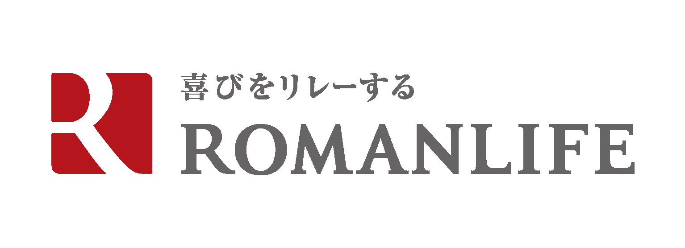
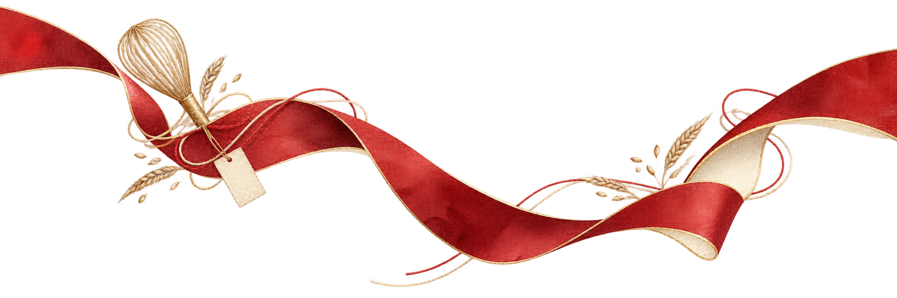
2028 GRADUATE RECRUITING
2028年卒向け 新卒採用
特別選考あり
つくる人、届ける人、支える人。
一人ひとりの仕事が、誰かの喜びへつながっていく。
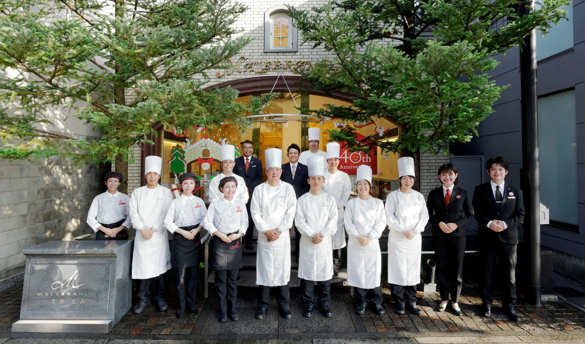
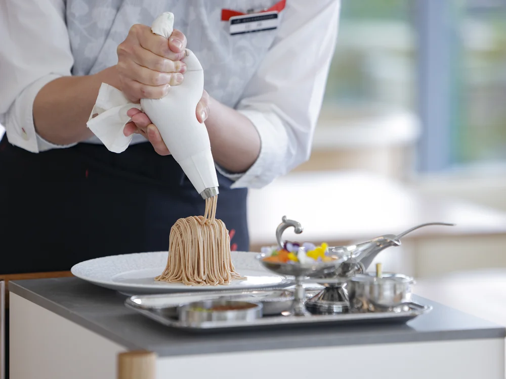
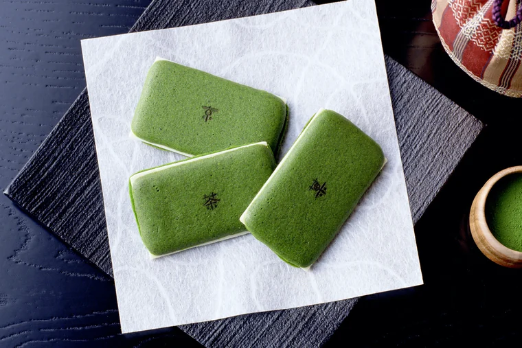
01
OUR WORK
商品をつくるだけではなく、店で過ごす時間や、誰かに贈るときの気持ちまで考える。異なる仕事が手をつなぎ、ブランドへの信頼を育てています。
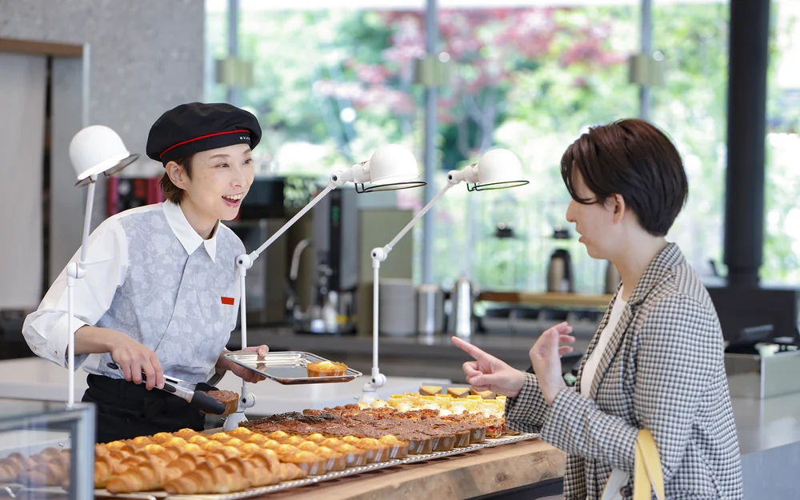
京都クオリティを追求しブランドの価値を創っていく
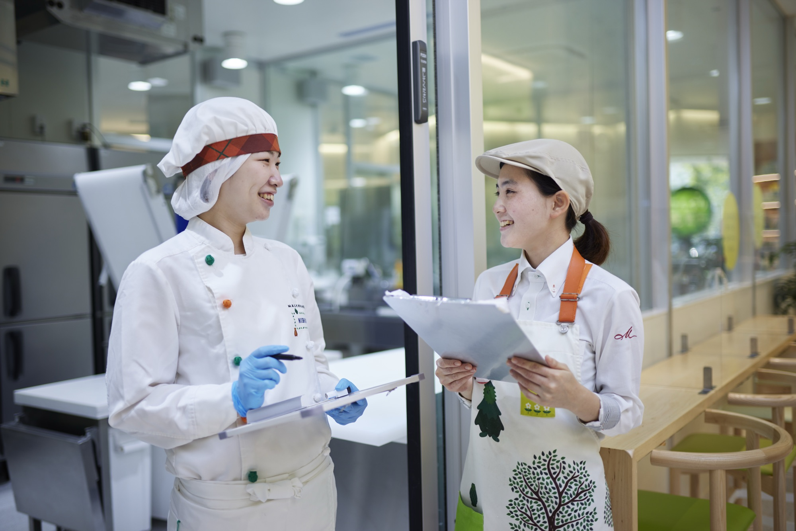
お客様の心を満たす魅力的なお菓子づくりをチームで実現
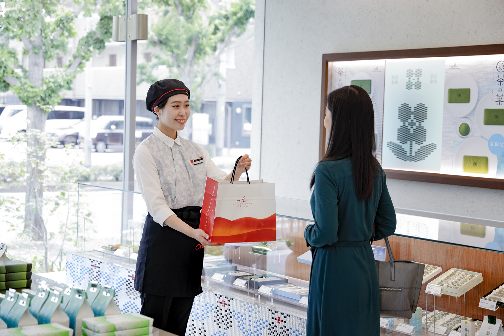
想いに寄り添い"幸せ必需品"をお届けする
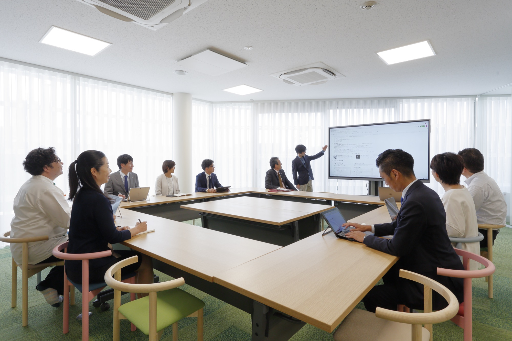
店長などのリーダーとしてお店を運営し、将来は会社を担う存在へ
02
WHO WE ARE LOOKING FOR
特別な経験よりも、誰かを喜ばせたい気持ち。
あなたの「好き」や「やってみたい」を、仕事につなげてみませんか。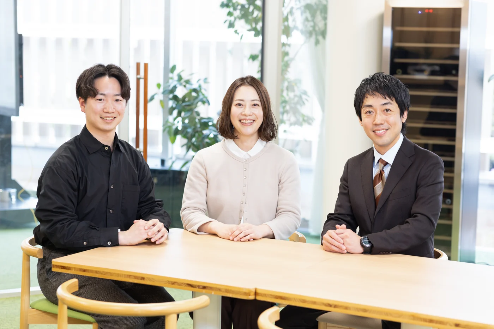
人と話したり、誰かと一緒に場を盛り上げたりするのが好き。そんな気持ちを、お客様や仲間との関わりに活かしたい人に向いています。
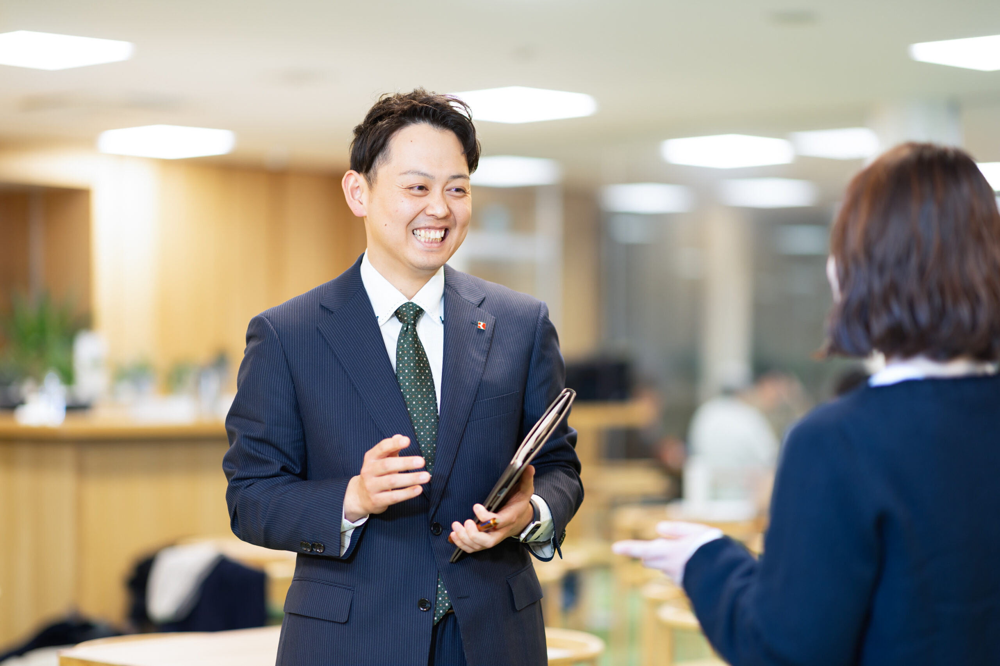
お客様の気持ちを想像し、もう一歩できることを考える。商品や接客を通じて、相手の期待に応える工夫を楽しめる人に向いています。
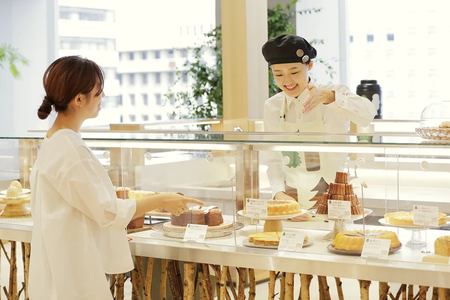
一人で抱え込まず、周りと声をかけ合いながら進める。仲間の意見を受け止め、チームで目標に向かうことを大切にしたい人に向いています。
接客だけでなく、さまざまな分野に挑戦できる環境です。若いうちから手を挙げ、経験を成長につなげたい人に向いています。
03
ROMANLIFE IN NUMBERS
男女比
3:7男性：女性年間休日
121日8連休・4連休を含む賞与
4.2か月前期支給実績／今期3か月予定04
PEOPLE
人の魅力が、ロマンライフで働く理由になる。
05
A DAY AT WORK
開店作業（納品確認、商品陳列、賞味期限チェック、予約商品準備など）
朝礼
接客（商品承り、包装、熨斗準備、配送承り、レジ作業など）
休憩
フロア業務（時間帯責任者としてお客様ご案内やスタッフへの指示）
接客
配送作業
休憩
接客
発注
接客・フロア業務
閉店作業（在庫確認、レジ締め、売上確認、店舗清掃など）
※配属店舗や勤務シフトにより異なります。
06
CAREER PATH
現場で得た視点が、次の仕事へつながる。
※異動により複数店舗を経験しながらリーダーを目指す一例です。
07
GROWTH & SUPPORT
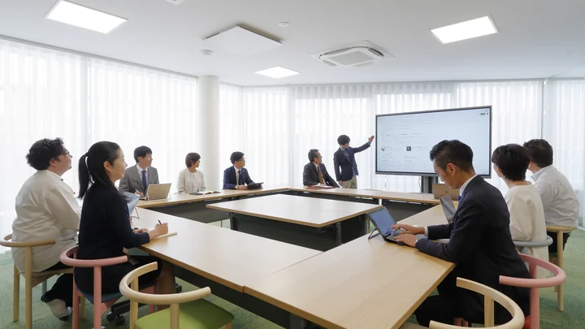
08
OPEN COMPANY
以下の日時にて、秋のオープンカンパニーを実施する予定です。会社概要やお仕事についての説明はもちろん、今回は先輩社員にも来てもらう予定でプログラムを組んでおります。
10.31土
11.03火・祝
11.07土
11.14土
11.23月・祝
12.12土
09
FAQ
総合職：販売・接客を通じて現場を理解し、サービススキルや店舗運営、マーケティングなどの基礎を学んでいただきます。入社1～3年で副店長を任され、数年後には店長として店舗をリードする存在へ成長。店長、副店長だけでなく、各自が得意とする分野でのリーダーとして活躍をしてください。その後は適性や成果に応じて幅広いキャリアを積み重ね、将来は会社全体を引っ張る存在を目指していただきます。
製造職：まずは様々なお菓子を作る等の業務から覚えていただき、ゆくゆくはチームでの生産状況を確認しマネジメントを行うリーダーへ。さらには生産の管理を行うグループ長や新たな製品づくりに特化した開発シェフを目指してください。
お店発信で企画をしていただくことが多いので、皆さんの頑張り次第で企画に携わることが可能です。
はい。1年に1回必ず取得していただく制度になっています。
クリスマスや年末年始、ゴールデンウィークやお盆休みなど。世間がお休みとされる時期は忙しくなります。
ENTRY
28卒向け説明会エントリーフォーム